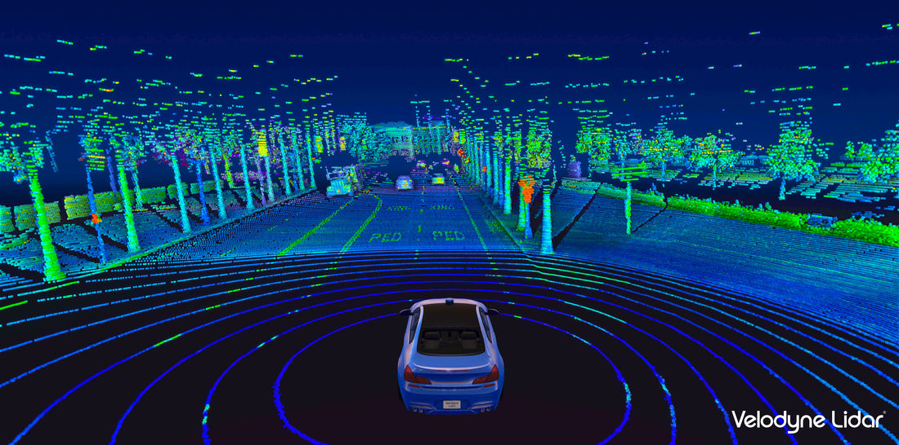

運転技術
+
以下では認知工学における運転技術にどのような種類があるのか、これらの将来について紹介しています。
種類
注意と集中
認知工学は、運転中の注意と集中に関する研究を行っています。運転中の情報処理や注意の配分、運転者の車内での認知負荷の評価などを調査して運転中の注意力の向上や運転者の負荷軽減に役立つ手法やツールの開発が行われています。
ボルボ社が車に搭載した。DAC(ドライバー・アラート・コントロール)：カメラを使用して、左右の車線と自車の位置関係を」監視し、注意力低下によるふらつきなどを検知しドライバーの注意を喚起するシステム。
運転支援システム
車線逸脱警報システムや衝突回避システムなど、運転中の危険な状況を検知し、運転者に警告や支援を行うシステムが開発されています。また、認知工学を活用して、運転者の状態や注意力をモニタリングし、適切なタイミングで運転支援を行うシステムの研究も行われています。

カメラセンサーに加えて、目に見えないレーザーこうを超高速で照射し瞬時に跳ね返ってくる信号から３D画像を作成し、自動運転に活用している。
自動運転技術
自動運転車は、センサーやカメラを使用して周囲の情報を収集し、認知工学を活用して環境を認識し、適切な判断や行動を行います。運転者の認知の過程を可視化し、自動運転システムの意思決定や行動に反映させることが試みられています。
将来性
運転負荷の軽減: 認知工学の研究に基づいた運転支援システムは、運転者の認知負荷を軽減することができます。例えば、車線維持支援システムや運転状況に応じたアラートシステムは、運転者の負担を軽減し、長時間運転や疲労運転による事故リスクを低減させることができます。
-
交通効率の向上: 認知工学の研究成果を活用した運転支援システムや自動運転技術により、交通の効率化が期待されます。自動車同士やインフラストラクチャーとの通信により、交通状況のリアルタイムな共有や協調動作が可能になり、渋滞の緩和や交通流の最適化が実現されるでしょう。
-
パーソナライズドな運転体験: 認知工学の研究により、運転支援システムは個々の運転者に合わせたカスタマイズが可能になります。運転者の状態や好みに応じた情報提示やサポートが提供され、運転体験がより快適でパーソナライズドなものになるでしょう。
研究紹介
防災分野
.png)
運転支援技術